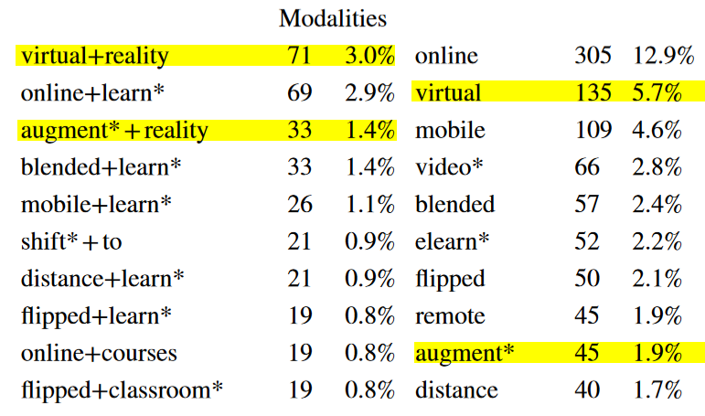
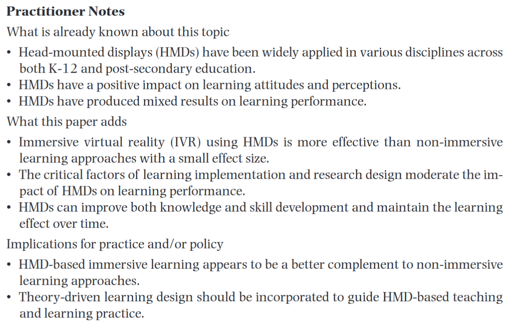
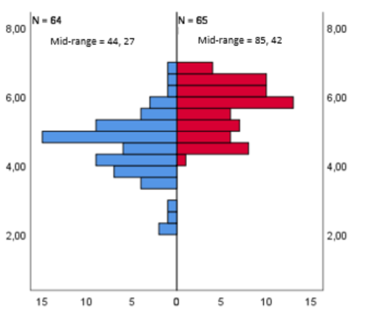
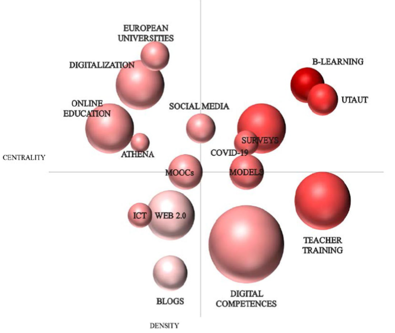

To Follow Along
Scan this QR code and your device’s slide deck will advance along with mine!

- But first, let me test the waters
- What do you think of or how do you feel when I say the word “metaverse?”
- How about “NFT?”
- Or “Web3?”
- If you have any negative response to any of these things, I promise, you’ll feel better when we’re done.
Agenda
The Plan for Today
- Who’s this guy?
- The State of XR in Education
- Want vs Have
- What’s Karu?
- Problems and Solutions
- Use Cases
- The Future

- Here’s the plan for today. At least, that’s the plan.
- I invite, I want folks to chime in.
- How do you envision it?
- What’s going on in your neck of the woods?
- So on
Who is this guy?
Dr. Ryan Straight
Assistant Professor of Practice
Applied Computing & Cyber Operations
Lab Director
College of Applied Science and Technology
University of Arizona

Me
MA{VR}X Lab
Mixed Augmented ViRtual eXtended Reality Lab
- College’s first lab
- One year old
- Broad concept of XR
- Holographic video, NFTs, AR training, more.
Lab info.
Extended Reality in Education
XR and Online Learning
Before asking what, let’s ask why.
Specifically, why XR in online learning.

Kimmons, R., & Rosenberg, J. M. (2022). Trends and Topics in Educational Technology, 2022 Edition. TechTrends, 66(2), 134–140. https://doi.org/10.1007/s11528-022-00713-0
So, why? Why do we need this? Why is it important?
Kimmons (2022) in Tech Trends:
- “virtual reality” and “online learning” were top bigrams for 2021
- “augmented reality” was #3 (see screenshot)
- these seem “impervious” to the pandemic.
- hashtags in #edtech tweets:
- #VR (917 users, 4368 tweets)
- #cybersecurity (820 users, 3111 tweets)
- lots of interest in XR but “has not crystalized into the sustained adoption and use of these emergent technologies” (p. 138-9)
- VR/AR “frequently referenced in comparison to other modalities or topics of research (p. 139)
- but little attention is paid to privacy, ethics, security, despite the rise in student data gathering and tracking
So, let’s start in that space. But first, let’s explore XR a bit more.
Is XR in Education Effective?
- Meta-analysis, 2013-2019.
- It is effective.
- It is nascent.

Wu, B., Yu, X., & Gu, X. (2020). Effectiveness of immersive virtual reality using head‐mounted displays on learning performance: A meta‐analysis. British Journal of Educational Technology, 51(6), 1991–2005. https://doi.org/10.1111/bjet.13023
The state of XR in education. Not the tech, but the ability and the research. What do they tell us?
HMDs, head-mounted displays, have a positive impact on learning attitudes and perceptions
Mixed results in learning performance.
Now this is an interesting observation that is in line with the notion that when people are having fun, they don’t necessarily understand it as learning. You can actually see this in course surveys: there’s often a negative correaltion between “did you have fun” and “do you felt like you learned a lot.”
People seem to have this notion that if you’re having fun, you’re not learning. And likewise, if you’re learning, it shouldn’t be fun. It might almost even be painful.
Remember: if you think there’s a difference between playing and learning, it means you don’t understand either.
Do students enjoy it?
- Sure do!
- More motivated, for one.

Campos-Mesa, M.-C., Castañeda-Vázquez, C., DelCastillo-Andrés, Ó., & González-Campos, G. (2022). Augmented Reality and the Flipped Classroom—A Comparative Analysis of University Student Motivation in Semi-Presence-Based Education Due to COVID-19: A Pilot Study. Sustainability, 14(4), 2319. https://doi.org/10.3390/su14042319
In this examination of AR versus flipped classrooms, the AR students were significantly more motivated than the flipped classroom students.
Skills?
- What skills do teachers have in ICT areas?
- Literature review: not XR.

Basilotta-Gómez-Pablos, V., Matarranz, M., Casado-Aranda, L.-A., & Otto, A. (2022). Teachers’ digital competencies in higher education: A systematic literature review. International Journal of Educational Technology in Higher Education, 19(1), 8. https://doi.org/10.1186/s41239-021-00312-8
Do teachers have the skills to even utilize this kind of technology, not to mention the support?
Turns out, according to this literature review from 2000 to 2021, no.
- Blogs do.
Conclusion
- It’s effective.
- Students enjoy it.
- Teachers lack the skills.
- But there’s more to it.

So we know students enjoy it, we know they’re motivated by the modality, and we know teachers, by and large, don’t know much about it or how to use it. How do we address this? We’ll get to that because that’s one of the core reasons for exploring this, but first, there are some other considerations:
Secondary Considerations
- Student data
- Privacy
- Ease of use
- Funding
- Fidelity
- Ownership
- Safety

We need to think about issues and concerns beyond just the content. When we’re dealing with students, we could be dealing with minors, we’re dealing with privacy laws, were dealing with data ownership and stewardship, we’re dealing with safety.
To quote Elizabeth Warren, “I’ve got a plan for that.”
What we have vs what we want
I wanted to give us all a standard foundation upon which we can actually think about this, so I figured, “We’re all here, why not look at the conference?” I’ll preface this with the disclosure that I’ve worked closely with the OLC in the past, I will occasionally build and facilitate workshops for them, and the folks involved have become some of my favorite people. So, this is not a criticism of the conference, merely an exploration and demonstration of where we seem to want to go versus where we are, I suppose.
Let’s look at the conference sponsors and what they do, and compare that to the trends we talked about earlier.
What We Have

There are 41 sponsors at this conference. Neither “virtual reality” nor “VR” appear anywhere. “Virtual” appears in InScribe, Blindside Networks, and InSpace but these are “virtual classrooms,” not an immersive or extended reality experience. On the flip side, seven sponsors explicitly call out proctoring as a service they provide, either exclusively or as part of their overall business model. That’s roughly 1 in 6.
What We Have (Continued)
virtual reality: 1VR: 1immersive: 2*immersion: 1augmented reality: 0extended reality: 0*

The astrix next to “immersive:” there are actually 4 but one those is this session and one is an industry showcase. This doesn’t include the Innovation Lab; I’m just talking about sessions.
The conference sessions, themselves, aren’t much reflective, either. As far as talks and sessions go, one by Angelika Gulbis from Madison College (“Mission to Mars: Group Interactions in a Virtual Reality Learning Experience”; that was yesterday) and one from Garamis Campusano and Eric Simon (“The Challenge Of Deploying VR Experiences At Scale: The Development Of A VR Application To Address Classroom Needs”; that was also yesterday) shows up in the program with the term “virtual reality” or “VR” in the title or abstract anywhere. Interestingly, those referencing the metaverse (both with presenters from the University of Arizona, me and Craig Wilson’s session “A Metaversity Framework: Higher Education in the Metaverse Can Increase Diversity”; totally unplanned, by the way) are happening right now, simultaneously. Beyond this, the conference itself has included extended reality experiences and concepts into areas like the Innovation Lab and some other spaces, but that’s pretty much it.
Now, this is not a criticism of the conference. I’m merely pointing out that, based on what we’ve seen so far, what people want is different from what they’re getting. Weirdly, we know that VR and related fields are insanely profitiable right now, so clearly money isn’t the issue. If anything, you’d expect more XR education platforms sponsoring a conference like this, right?
So how do we approach this? Perhaps this is a solution.
What is Karu?
The Name
- Charun (or Charu, Karun) was an Etruscan psychopomp.
- Shepherded across realities.
- That’s our goal.
What is Karu?
- Knowledge base
- Social network
- Content hub
- Collaboration space
- More

Use Cases
Use case 1: Education
- Students enjoy XR.
- It’s a powerful teaching medium.
- Teachers don’t know how to create it.

Now, no mistake: this platform, Karu, is not meant to be some sort of VR Khan’s Academy. But…
Let’s imagine you’re an instructor and you want to explore the use of XR in your classroom.
How do you start?
- Do you know what hardware is available for your needs?
- Do you know where to find funding to make what you want to happen happen?
- Do you know the difference between an OBJ and an FBX file?
- Do you know what software to use if you want to develop? Do you know how to use it?
- Do you know where to find an artist to design the thing?
- Do you know how to get the product to your students?
- Do you know who around you, physically, has what capabilities?
Blended teaching is an example of this. And we hear a lot about blended learning and teaching here (and rightfully so). But let’s envision it as more than just how to bring in-person students and online students together. Imagine “blended” as students have AR glasses like a HoloLens and like with Spatial, share a wall. Maybe table. They can all stand around the same space, synchronously, and engage with one another actually seeing each other (well, an avatar, but it can look like you!).
Wouldn’t that count as blended?
Now, do you know how to make this happen? Well, someone does, and Karu is precisely the kind of place where that information can be curated and shared.
Use case 2: Sharing
- Artist: share your designs and projects.
- Educator: share your materials and reviews.
- Company: share your needs and find developers.
- Researchers: share your findings and questions.

One of the major hurdles at this point is, as I’ve mentioned, how to find people and projects.
We’ll come back to the potential problems with this shortly.
Use case 3: Connection
- Immense interest in XR but folks don’t know where to look, what’s out there.
- We need a space for folks to be weird, creative, paradigm-breaking.
- Distribution options are limited, so people don’t see it.
- Listen to the whole interview: #1055: VR Comedy “Flat Earth VR” with Lucas Rizzotto, Lucas Builds the Future YouTube channel, & AR House in LA | Voices of VR Podcast

In a recent interview on the Voices of VR Podcast, Lucas Rizzotto lamented something that confirmed what we’d already been thinking: that perceived disconnect, the frustration, is real. SXSW. Sundance.
Built the “AR House” in LA to bring artists and developers together. Events. Hackathons. Create an environment where people can be creative and find collaborators and inspiration.
AR is a platform that hasn’t really matured enough yet. helps to unify the medium and those interested in it. There’s relatively little out there in terms of curation and distribution for XR experiences. How do we get the work out?
So, these issues are what we’re aiming at: how do you find content? Once you find it, how to do implement it? Once you implement it, how do you review it to let others know what has value and let the creator know you appreciate their work?
Karu is, in part, a social network. It allows users to match up with others (be they individuals, teams, companies, et cetera) based on interests and project goals. An artist needing a project? Teams or companies can post their interests/needs and welcome applications/pitches/etc. Team that needs a developer? Vice versa, same thing. Users/teams/etc will be able to tag themselves on a map and state just what kinds of resources they have available, further fostering collaboration opportunities. This, of course, will have security and privacy settings baked in.
Use case 4: The Repository
- This is what it all comes to, eventually.
- A central location for all things XR.
- Lesson plan? Go for it.
- 3D model of a heart? Gotcha.
- Review of the new Pico headset? Yup.
- An XR library in XR.

This is the library. Karu is designed to be a place where users can find content and collaboration easily, where identities are validated, where data is respected, and where …
Tech Solutions to People Problems
Security
Problem: public often means vulnerable.
Solution: people.

Karu will be, to some degree, publicly viewable, but those allowed to share, interact, engage, and so on, will go through a vetting process similar to BrightID(?). At first, invite-only. Then, vetted users will be given invitations to grow the network. And so on. It is not within the foreseeable future that Karu will be simply open to the public, as it is intended for industry, education, and so on.
Trust
Problem: on the internet, nobody knows you’re a dog.
Solution: zero-trust and self-sovereign identity.

Karu will be based on a variety of Web3 principles: zero trust and self-sovereign identity. We believe that people should own their identities and their data, and that the platforms given stewardship over it should treat it–and them–with respect. Privacy, safety, and security are at the very top of our list of concerns and development priorities.
Privacy
Problem: not all projects should public. Not all assets are ready.
Solution: full control.

Karu will have a variety of privacy settings to control how much user profile data is shown to whom, what kinds of projects are viewable, pitchable, et cetera, and can lock down, for example, how many degrees of separation someone must be in order to engage with particular content of theirs. They can also set incoming engagement to only be after they have initiated contact or have set the privacy options accordingly. Think of it like… Bumble for the metaverse.
Content Ownership and Monetization
Problem: who owns what?
Solution: immutable records.

each unit of content developed for or placed on Karu will become, itself, an NFT. If users wish to provide content with, for example, a CC0 license, they can do that. Public domain? Sure. Did they create something that they want to monetize and sell? Great! The NFT is then purchased and the developed content is transferred. Like music NFTs, if it is then sold on, a certain portion will always go back to the creator.
The Future
The Platform, Itself
- Web3
- Self-Sovereign Identities
- Creator-Owned Assets
- Privacy-focused
- Learning Prioritized

Eventually, the goal of Karu is to become, itself, an immersive platform. Imagine this: (and, please, whenever I say “imagine this,” understand it as “this is already absolutely possible, we just need to build it”).
So, while it will begin simply utilizing Web3 affordances, it will (in theory) end up in an XR space all its own, allowing for users to use (speaking for what’s available now) a shared wall and HoloLenses to meet, discuss, and so on. Users will be able to preview, for example, a low poly version of a virtual object before committing to getting the actual thing. Since all content is simultaneously minted with its own NFT and that is what gets bought and sold, users will always know where it came from and who the originator is.
No fakes, no frauds, no bait-and-switch. Everything is auditable and everything can be vouched for.
XR Learning
So what do we need?
- Training
- Resources
- Access
- Community

Let’s wrap up by looking at what we need, given what we know.
- Teachers need training.
- They don’t need week-long workshops on creating XR content.
- They need a platform that’s easy to use, simple to navigate, trustworthy, and instructive.
- For that instruction, they need tutorials, how-to guides, references, and explanations.
- The diataxis framework is the starting point for that.
- Resources
- Is it impractical to expect every teacher to write a grant when they want to get this kind of tech into their classrooms or to their students? Probably.
- So, what if you could just look to see who’s near you or who’s aligned with your interests and has what you need?
- Maybe it’s not just headsets or something, perhaps it’s someone to build what you have an idea for. Same approach: just look for them.
- Access
- We need access to the content, after all.
- And we need that access to be trustworthy, just like the content.
- And we need community
- Two heads are usually better than one.
- We need to be able to find out who’s doing what and how we can collaborate.
- We need this person to provide a pedagogical framework for using XR, we need that person to provide reviews of headsets or software so you can make a decision, and we need those people to produce something that you can leverage.
- And how great would it be if all those were in a single place?
Citation
BibTeX citation:
@online{straight,
author = {Ryan Straight and {[}\textless br /\textgreater Dr. Ryan
Straight\textless br /\textgreater Assistant Professor of
Practice\textless br /\textgreater Applied Computing \& Cyber
Operations{]}\{style=’font-size: 70\%;’\}},
title = {\textless Img Src=“banner.png” Alt=“{Slide} Deck”
Width=“70\%”/\textgreater{}},
url = {https://mavrxlab.org/news/2021-12-14-in22/deck},
langid = {en}
}
For attribution, please cite this work as:
Ryan Straight, and [<br />Dr. Ryan Straight<br />Assistant
Professor of Practice<br />Applied Computing & Cyber
Operations]{style=’font-size: 70%;’}. n.d. “<Img
Src=‘banner.png’ Alt=‘Slide Deck’
Width=‘70%’/> .” https://mavrxlab.org/news/2021-12-14-in22/deck.